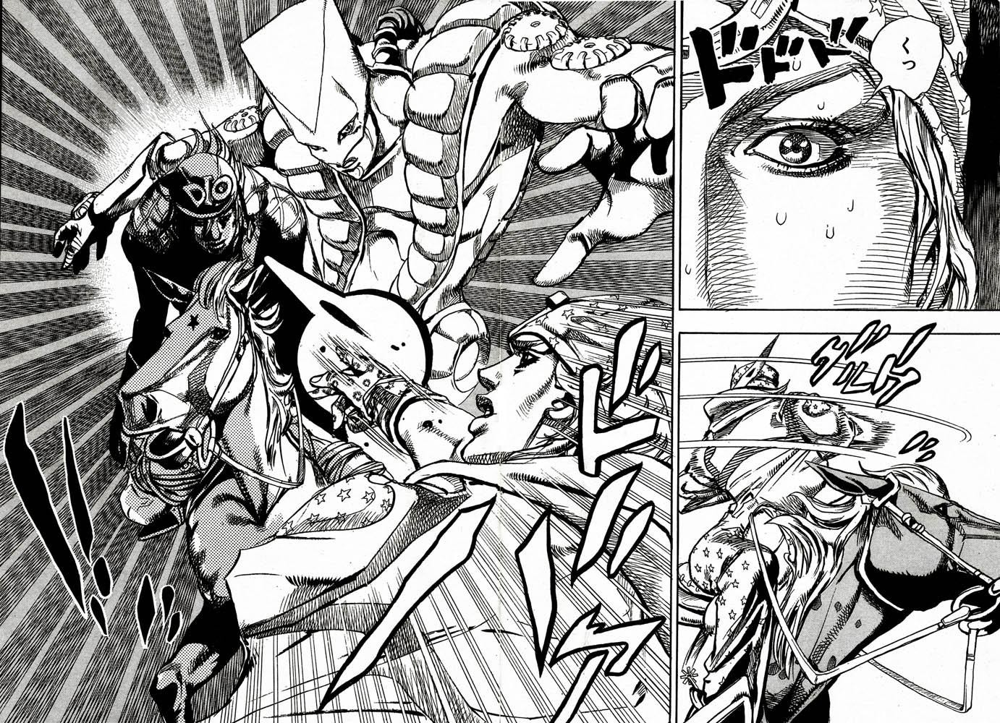
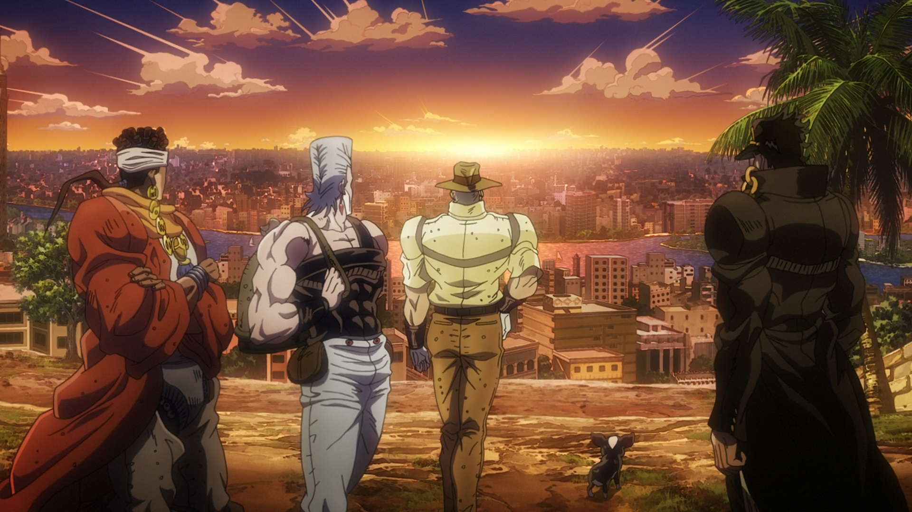
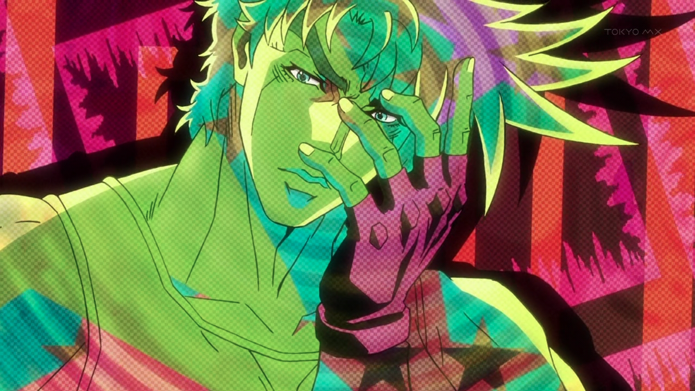
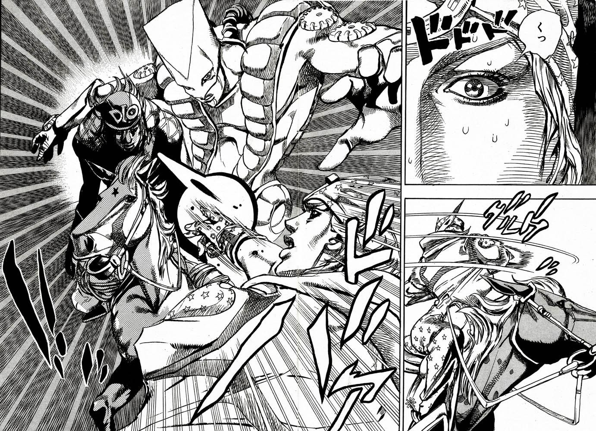
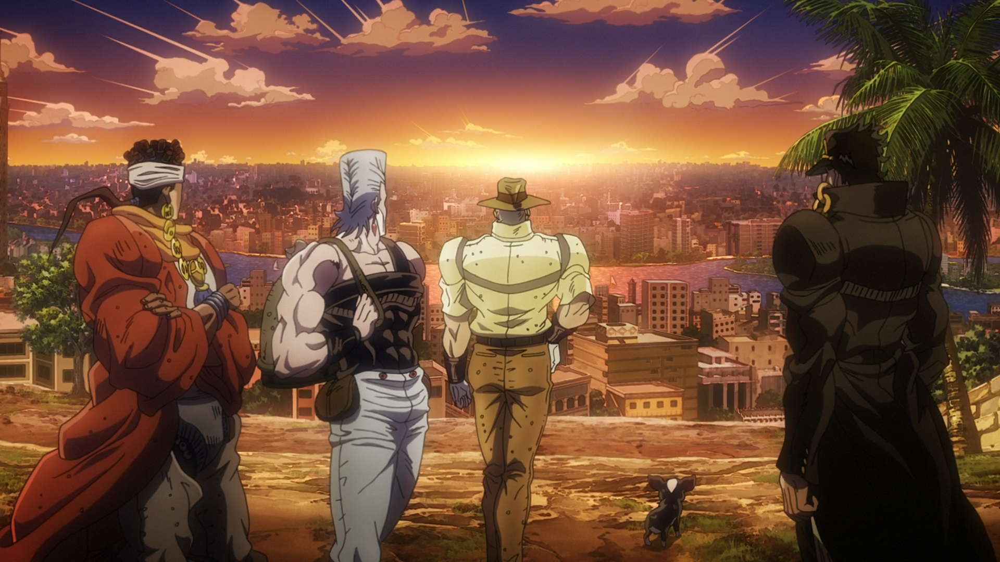
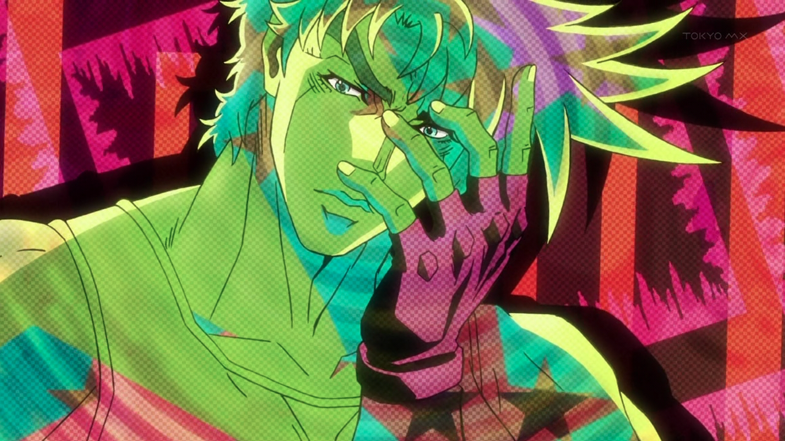

Hirohiko Araki is a renowned Japanese manga artist, best known for creating the long-running series "JoJo's Bizarre Adventure." Born on June 7, 1960, in Sendai, Japan, Araki has been active in the manga industry since the early 1980s.
Araki grew up in Sendai, Japan with his parents and younger identical twin sisters. He cites his sisters' annoyances as the reason he spent time alone in his room reading manga, naming Ai to Makoto as the most important one to him. He supposes that his father's art books were his motive for drawing manga; he was particularly influenced by the work of French artist Paul Gauguin. After a school friend praised his manga, he began secretly drawing manga behind his parents' backs. He submitted his first work to a magazine in his first year of high school. All his submissions were rejected while other artists his age or younger were making successful debuts. He decided to go to the publishers' offices in Tokyo in person to find out why, taking a manga, Poker Under Arms, that he stayed up all-night to finish. The Shueisha editor he met highly criticized the work, but said it had potential and told Araki to clean it up for the upcoming Tezuka Awards.
His work is characterized by its unique art style, imaginative storytelling, and complex characters. "JoJo's Bizarre Adventure" has been serialized in Weekly Shōnen Jump since 1987 and has spawned numerous adaptations, including anime series, video games, and merchandise. Araki's influence extends beyond manga, as his distinctive fashion sense and dynamic poses have left a lasting impact on pop culture. Araki's drawing commonly involves idealized figures in broad, expressive poses at adventurous scales and angles; with sharply inked lines and scattered, blackened planes; lending them a sculptural effect. In color illustrations and pages, Araki varies roughly complementary color juxtapositions. Araki has described his drawing method as "classical". He has indicated admiration for Leonardo da Vinci in the text of the manga and otherwise; and in a video feature in JOJOVELLER, he is seen making visual reference to a book of Michelangelo's work during the construction of a piece.
 


Official Website



Official Website